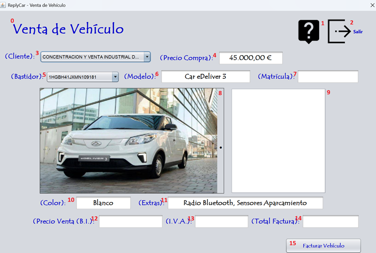

La venta de un vehículo consiste únicamente en la contabilización o registro de la factura del cliente. Sigue las instrucciones de la fotografía para realizar el proceso correctamente. Para realizar la venta del vehículo debe ingresar los datos que corresponden a la numeración expuesta en la fotografía. Vamos a proceder:

0 - Título de la pantalla, descripción de lo que significa la pantalla.
1 - Botón para proceder a leer la ayuda de la aplicación.
2 - Botón para salir de la aplicación.
3 - Elegimos el cliente al que suministramos el vehículo.
4 - Nos muestra el precio de compra para tener una visión del coste del vehículo.
5 - Bastidor del vehículo que vamos a suministrar.
6 - Elegimos el modelo del vehículo que vamos a suministrar.
7 - Insertamos la matrícula del vehículo que vamos a suministrar.
8 - Foto del modelo del vehículo que vamos a suministrar.
9 - Texto libre para comentarios del vehículo que vamos a suministrar.
10 - Color del modelo del vehículo que vamos a suministrar.
11 - Extras del modelo del vehículo que vamos a suministrar.
12 - Inserta la Base Imponible del vehículo que vamos a suministrar.
13 - I.V.A. del vehículo que vamos a suministrar.
14 - Total de factura del vehículo que vamos a suministrar.
15 - Facturar el vehículo al cliente.
Nota: Pulsando F1 en la ventana principal, se abrirá esta página de ayuda.